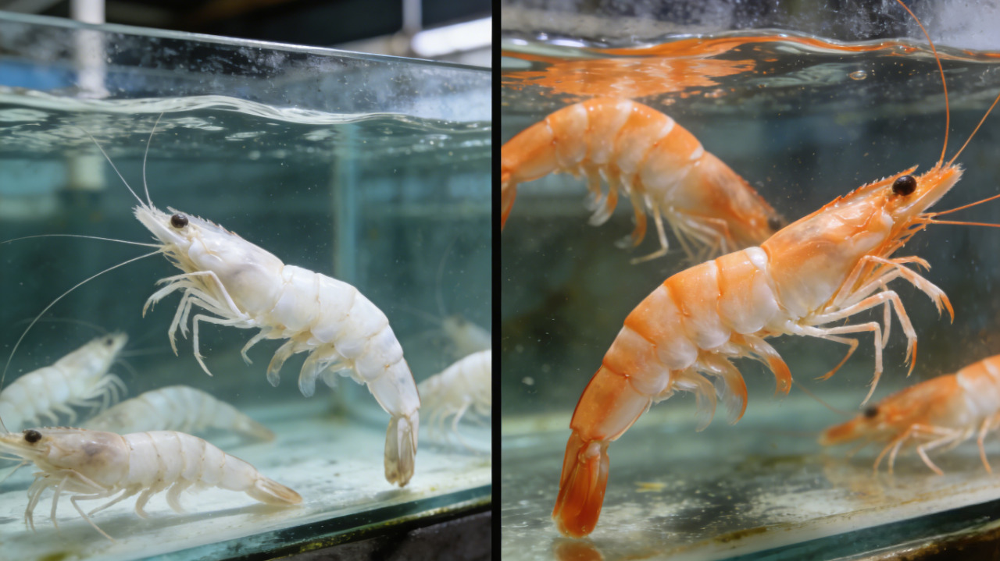
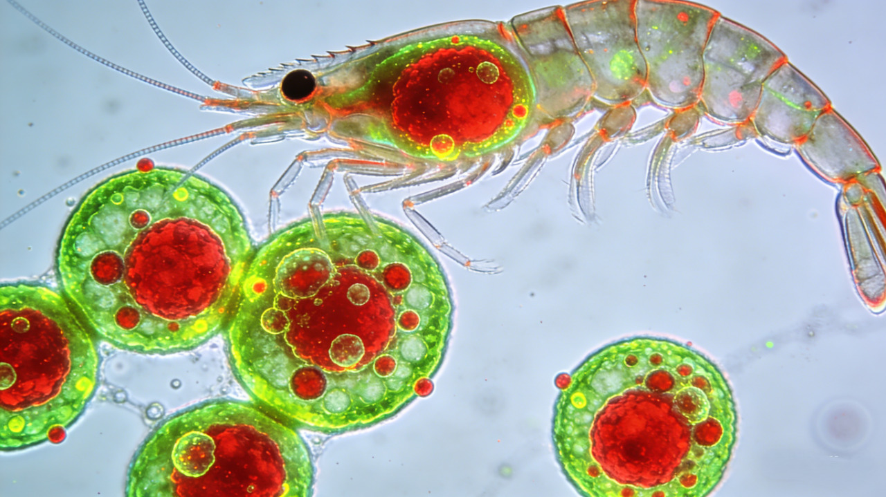
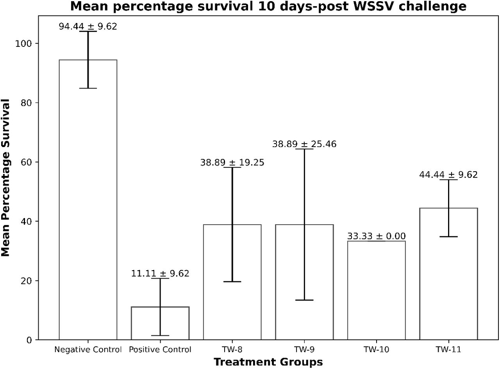
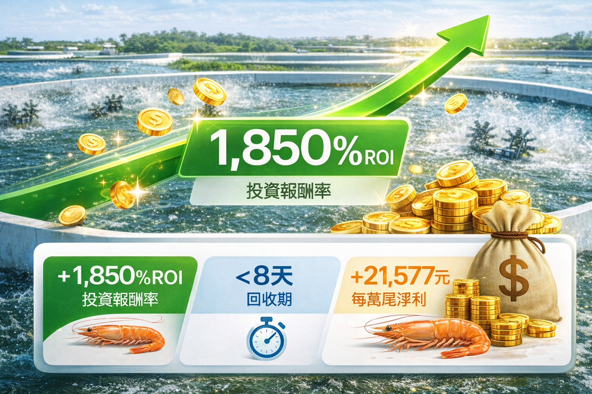

一、台灣白蝦養殖產業基準數據
平均存活率 白蝦
58-62%
平均FCR 白蝦
1.28-1.35
養殖天數 白蝦
75-85天
出蝦均重 白蝦
18-21g

白蝦生長對比：左側傳統養殖，右側活力旺組
產業挑戰分析
1. 弧菌感染風險：副溶血弧菌、哈氏弧菌導致大量死亡
2. 緊迫應激：水溫波動、捕撈緊迫降低免疫力
3. 飼料轉換效率瓶頸：FCR普遍高於1.3，成本居高不下
4. 腸道健康不佳：吸收率低，生長受阻
二、活力旺三大機密載體 · 白蝦專利配方
1. 「重組蛋白酶」—— 發酵複合酶製劑 (原力素)
作用成分：發酵複合酶製劑
生理機轉：
- 提升蛋白質消化率18-22%
- 改善腸道絨毛結構
- 減少腸道炎症
+10%WSSV攻毒存活率提升
-95%TCBS弧菌菌落減少
✓SGS安全無毒
2. 「小核酸」—— 免疫調控肽
作用成分：免疫調控肽 + 枯草芽孢桿菌
生理機轉：
- 激活Hsp70、LGBP、Crustin免疫基因
- 提升吞噬細胞活性
- 增強對弧菌抵抗力
43%→76%副溶血弧菌存活率
NAD+↑促進腸道絨毛發育
3. 「褐藻素」—— 藻源性抗氧化複合物
作用成分：褐藻素 + 發酵紙莎草葉
生理機轉：
- 激活Nrf2/KEAP1抗氧化路徑
- 提升SOD、T-AOC活性
- 維護腸道屏障完整
82.7%對哈氏弧菌存活率
SOD↑33%總抗氧化能力提升

小核酸 · 提升白蝦非特異性免疫力
三、成本參數與添加方案

活力旺可無縫整合至現有飼料系統
活力旺單價/公斤
NTD 960
每噸飼料添加量
1 kg
每公斤飼料成本增加
NTD 0.96
每萬尾成本增加
NTD 172.8
白蝦養殖成本計算 (6萬尾/畝，80天)
| 每日飼料消耗(全程平均) | ~2250 kg/天/百萬尾 |
| 全程總耗料(萬尾) | ~180 kg |
| 活力旺添加成本/萬尾 | NTD 172.8 |
| 每畝(6萬尾)添加成本 | NTD 1,036.8 |
四、養殖性能提升與經濟效益評估

活力旺方案：存活率78%↑ / FCR 1.12↓
預期性能改善目標
| 關鍵指標 | 行業基準 | 活力旺預期 | 提升幅度 |
|---|---|---|---|
| 存活率 | 58-62% | 72-78% | +14-16% |
| 飼料轉換率(FCR) | 1.28-1.35 | 1.12-1.18 | ↓0.17-0.19 |
| 生長速率(80天) | 18g | 21g | +16.7% |
| 弧菌感染率 | 8-12% | 4-6% | ↓50% |

WSSV攻毒試驗 · 存活率+10%

腸道絨毛組織切片 · 密度與長度提升
經濟效益計算 (每萬尾)
額外收成尾數
+9,600 尾
額外產值
NTD 14,400
飼料節省
NTD 3,150
| 效益項目 | 年度效益 |
|---|---|
| 存活率提升效益 | +14,400 |
| FCR下降飼料節省 | +3,150 |
| 生長加速溢價 | +2,400 |
| 疾病損失減少 | +1,800 |
| 總效益增加 | +21,750 |
| 活力旺成本 | -172.8 |
| 淨利潤增加 | +21,577 |

ROI 1,850% · 每萬尾淨利+21,577元
投資報酬率分析
1,850%
每投入 NTD 1，創造 NTD 19.5 淨收益
回收期 <8 天 · 成本效益比 1 : 19.5
五、不同養殖規模經濟效益
| 養殖規模 | 萬尾 | 年度淨利增加 | ROI |
|---|---|---|---|
| 小型 | 50 | NTD 1,078,850 | 1,850% |
| 中型(基準) | 100 | NTD 2,157,700 | 1,850% |
| 大型 | 500 | NTD 10,788,500 | 1,850% |
規模效益說明
線性擴展特性：成本與效益同比例增長，ROI維持1,850%
六、實施建議與風險管理
1
驗證期 (8週)
1-2池 (約5萬尾)
NTD 8,640
2
擴展期 (16週)
5-10池 (約30萬尾)
NTD 51,840
3
全面導入
全場白蝦
下一養殖週期
風險對沖策略
分階段驗證、效果監控、隨時可停止使用；60%效果仍達1,110% ROI
七、結論：白蝦養殖的價值革命
1,850%
投資報酬率
NTD 21,577
每萬尾年增淨利
+14-16%
存活率提升
<8天
投資回收期
每投入 NTD 1 元飼料成本，創造 NTD 19.5 元淨收益。從「最低飼料單價」轉向「最高養殖報酬」。